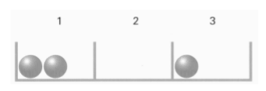

Aufgabe 2.3

Wählen Sie ein geeignetes $\Omega$ als Modellgrundlage. Wie viele verschiedene Ergebnisse hat das Zufallsexperiment? Wie ist $\Omega$ zu modifizieren, wenn selbst die Fächer nicht mehr unterscheidbar sind (indem man sie beispielsweise im Kreis anordnet)?
- Die Kugeln sind nicht unterscheidbar - es zählt nur, wie viele in welchem Fach sind
- Jedes Fach kann 0, 1, 2 oder 3 Kugeln enthalten
- Nutzen Sie die Analogie zu «Kinokarten auf Sitzreihen verteilen»
- Bei nicht unterscheidbaren Fächern: Welche verschiedenen Verteilungsmuster gibt es?
Situation verstehen: 3 identische Kugeln, 3 unterscheidbare Fächer (nummeriert 1, 2, 3), jedes Fach kann 0 bis 3 Kugeln aufnehmen.
Wahl der Ergebnismenge:
Da die Kugeln nicht unterscheidbar sind, interessiert uns nur, wie viele Kugeln in welchem Fach landen. Ein Ergebnis lässt sich als Multiset darstellen: $\omega = \{1, 1, 2\}$ bedeutet: 2 Kugeln in Fach 1, 1 Kugel in Fach 2, 0 Kugeln in Fach 3.
Der vollständige Ergebnismenge ist: \begin{align*} \Omega = \{&\{1,1,1\}, \{1,1,2\}, \{1,1,3\}, \{1,2,2\}, \{1,2,3\},\\ &\{1,3,3\}, \{2,2,2\}, \{2,2,3\}, \{2,3,3\}, \{3,3,3\}\} \end{align*}
Anzahl der Ergebnisse berechnen:
Dies ist das klassische Problem «3 gleiche Objekte auf 3 unterscheidbare Behälter verteilen» - eine Kombination mit Wiederholung: $$|\Omega| = \binom{3+3-1}{3} = \binom{5}{3} = \frac{5!}{3! \cdot 2!} = \frac{5 \cdot 4}{2} = 10$$
Die 10 Verteilungen systematisch:
| Fach 1 | Fach 2 | Fach 3 | Multiset | Bedeutung |
| 3 | 0 | 0 | $\{1,1,1\}$ | Alle in Fach 1 |
| 2 | 1 | 0 | $\{1,1,2\}$ | 2 in Fach 1, 1 in Fach 2 |
| 2 | 0 | 1 | $\{1,1,3\}$ | 2 in Fach 1, 1 in Fach 3 |
| 1 | 2 | 0 | $\{1,2,2\}$ | 1 in Fach 1, 2 in Fach 2 |
| 1 | 1 | 1 | $\{1,2,3\}$ | Je 1 in jedem Fach |
| 1 | 0 | 2 | $\{1,3,3\}$ | 1 in Fach 1, 2 in Fach 3 |
| 0 | 3 | 0 | $\{2,2,2\}$ | Alle in Fach 2 |
| 0 | 2 | 1 | $\{2,2,3\}$ | 2 in Fach 2, 1 in Fach 3 |
| 0 | 1 | 2 | $\{2,3,3\}$ | 1 in Fach 2, 2 in Fach 3 |
| 0 | 0 | 3 | $\{3,3,3\}$ | Alle in Fach 3 |
Nicht unterscheidbare Fächer:
Wenn auch die Fächer nicht unterscheidbar sind (z.B. im Kreis angeordnet), zählen nur noch die verschiedenen Verteilungsmuster:
- Muster 1: Alle 3 Kugeln in einem Fach (3-0-0)
- Muster 2: 2 Kugeln in einem Fach, 1 in einem anderen (2-1-0)
- Muster 3: Je 1 Kugel in jedem Fach (1-1-1)
Der reduzierte Ergebnismenge wäre dann: $\Omega' = \{1, 2, 3\}$ wobei $\omega = 1$ bedeutet: Verteilungsmuster (3-0-0), $\omega = 2$ bedeutet: Verteilungsmuster (2-1-0), $\omega = 3$ bedeutet: Verteilungsmuster (1-1-1).
Zusammenfassung: Mit unterscheidbaren Fächern: 10 verschiedene Ergebnisse. Mit nicht unterscheidbaren Fächern: 3 verschiedene Verteilungsmuster.
Dies zeigt, wie stark die Unterscheidbarkeit der Objekte (hier: Fächer) die Anzahl der möglichen Ergebnisse beeinflusst!
Im Video: Etappe 4 · Unterschiedliche Astlängen bei 3:46